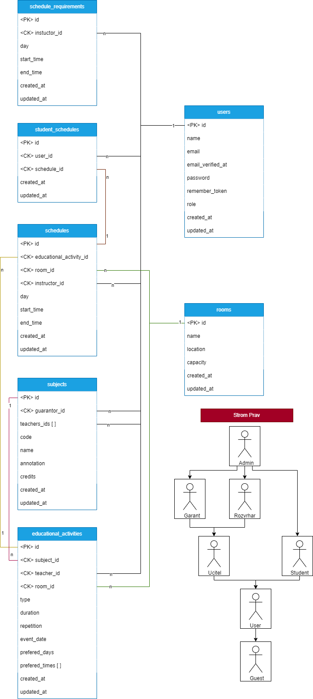

Název zadání (IIS - Informaèní systémy)
- Autoøi
- Andrej Horáèek
xhorac20@stud.fit.vutbr.cz -
Veduci timu, Tvorba Dokumentacie, Tvorba Databazy, Implementacia Prihlasovania, Registracie, Roly Hosta,
Uzivatela, Studenta a
Garanta
- Jakub Brèiak
xbrcia00@stud.fit.vutbr.cz -
Implementacia Role Admina, Uprava Databazy a Vizualu, Celkova korektura a doladenie vizualu
- Matìj Nová
xnovak2v@stud.fit.vutbr.cz -
Implementacia Roly Vyucujuceho a Rozvrhara, Uprava Databazy a Vizualu
-
- Kazdy clen timu implementoval Model View a Controller pre svoju cast zadania.
Na Analyze, Navrhu a Testovani sa taktiez podielal kazdy clen
- URL aplikace
- http://www.stud.fit.vutbr.cz/~xhorac20/IIS
U¾ivatelé systému pro testování
| Email |
Heslo |
Role |
| dio@brando.com |
heslo123 |
Admin (Administrator) |
| goku@kakarot.com |
heslo123 |
Guarantor (Garant Predmetu) |
| monkey@luffy.com |
heslo123 |
Teacher (Vyucujuci) |
| zoro@roronoa.com |
heslo123 |
Scheduler (Rozvrhar) |
| sanji@vinsmoke.com |
heslo123 |
Student (Student) |
| freddy@fazbear.com |
heslo123 |
User (Registrovany uzivatel) |
|
|
Guest (Neregistrovany uzivatel) |
Video
Pøilo¾te odkaz na komentované video demostrující pou¾ití informaèního systému. Zamìøte se na pøípady u¾ití definované
zadáním (napø. registrace u¾ivatele, správa u¾ivatelù a èinnosti jednotlivých rolí). Video nahrajte napøíklad na VUT
Google Drive, kde ho bude mo¾né pøímo spustit z odkazu.
<Implementácia
Projekt "Planning Schedules" je implementovaný s pou¾itím PHP frameworku Laravel a skladá sa z niekoµkých kµúèových
èastí, ktoré implementujú rôzne prípady pou¾itia:
-
Autentizácia a autorizácia:
Zaklady implementované pomocou Laravel Breeze a nasledne upravene podla potreby. Súbory pre správu u¾ívateµov sa nachádzajú v prieèinku routes/auth.php
a v kontroléroch v app/Http/Controllers/Auth.
-
U¾ívateµské role:
Vyu¾íva sa Laravel model User v app/Models/User.php s definovanými metódami pre
overenie role u¾ívateµa (isAdmin, isTeacher, atï.).
-
Správa pou¾ívateµov:
Admin má mo¾nos» spravova» pou¾ívateµov cez AdminController v app/Http/Controllers/AdminController.php.
-
Správa predmetov:
Garant predmetu mô¾e spravova» predmety cez SubjectController v app/Http/Controllers/SubjectController.php.
-
Správa výukových aktivít:
Garant predmetu spravuje výukové aktivity cez EducationalActivitiesController v app/Http/Controllers/EducationalActivitiesController.php.
-
Správa rozvrhov:
Rozvrhy sú spravované pomocou SchedulesController v app/Http/Controllers/SchedulesController.php.
-
©tudentský rozvrh:
©tudenti prezerajú a upravujú svoj rozvrh cez StudentScheduleController v app/Http/Controllers/StudentScheduleController.php.
-
Vytváranie a správa miestností:
Admin mô¾e spravova» miestnosti cez RoomsController v app/Http/Controllers/RoomsController.php.
Databáze
Grafické schéma relaèní databáze:

Instalace
- Postup in¹talácie na server:
- Stiahnite projekt zo zdrojového repozitára (napr. GitHub) do cieµového adresára na serveri.
- In¹talujte Composer, pokiaµ e¹te nie je nain¹talovaný.
- Otvorte terminál a prejdite do koreòového adresára projektu.
- Spustite príkaz `composer install` pre in¹taláciu závislostí.
- V súbore `.env` upravte konfiguráciu databázy a ïal¹ie potrebné nastavenia.
- Spustite príkaz `php artisan key:generate` pre generáciu aplikácie kµúèa.
- Spustite príkazy pre migráciu databázy `php artisan migrate`
a `php artisan db:seed` pre inicializáciu databázy (`php artisan serve` lokalne spustenie).
- Softvérové po¾iadavky:
- PHP verzia 8.1 alebo vy¹¹ia (pouzita: 8.2.12).
- Laravel Framework verzia 10.10 alebo vy¹¹ia (pouzita: 10.32.1).
- Databázový systém podporovaný Laravel (napr. MySQL, PostgreSQL).
- Web server (napr. Apache, Nginx).
- Composer pre správu PHP závislostí.
- Ako rozbali», konfigurova», inicializova» databázu:
- Rozbaµte stiahnutý projekt na serveri.
- Upravte `.env` súbor s potrebnými konfiguraènými údajmi, najmä databázové pripojenie a prístupové údaje.
- Spustite migráciu databázy pomocou `php artisan migrate` pre vytvorenie databázových tabuliek.
- Pou¾ite `php artisan db:seed` pre naplnenie databázy poèiatoènými dátami.
Známé problémy